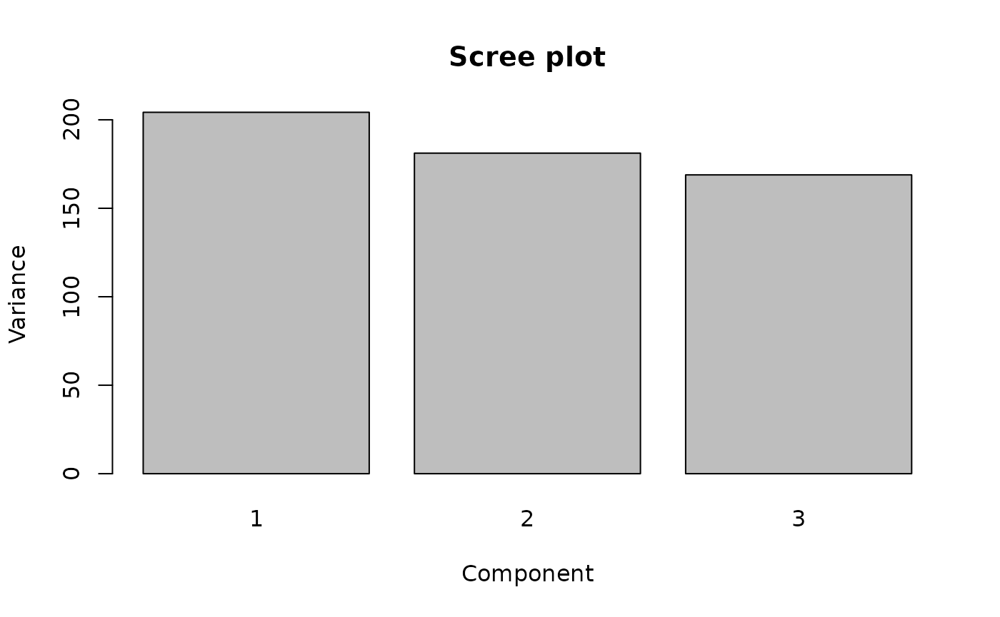

GPCA Basics: Getting Started
gpca-basics.RmdWhy generalized PCA?
Standard PCA (prcomp()) treats every observation and
variable equally. That is fine when the data are homogeneous, but in
many applications the assumptions are wrong: some observations are
noisier than others, some variables are correlated by design, or there
is a known spatial/temporal structure you want the decomposition to
respect. GPCA lets you encode that knowledge through a row metric M and
a column metric A. When both are identity, you get ordinary PCA
back.
Row weights (diagonal metric)
row_wt <- runif(nrow(X), 0.5, 1.5)
M <- Matrix::Diagonal(x = row_wt)
fit_row <- genpca(X, M = M, ncomp = 3, preproc = multivarious::center())
head(multivarious::scores(fit_row))
#> PC1 PC2 PC3
#> Obs1 -0.6081369 -0.56870409 0.3255369
#> Obs2 -1.6138469 -0.95435834 -0.5040896
#> Obs3 -0.2417079 4.12986019 1.7555520
#> Obs4 1.1451390 -0.05141449 -1.3684167
#> Obs5 -2.3633284 -1.68402140 1.1420855
#> Obs6 -0.2998462 -0.07928333 2.0870206Choosing the number of components
A scree plot of the eigenvalues is a quick first look:
barplot(fit$sdev^2, names.arg = seq_along(fit$sdev),
xlab = "Component", ylab = "Variance",
main = "Scree plot")
For a more principled choice, split rows into train/holdout, fit on
the training set, and compare holdout reconstruction error across
different values of ncomp. With informative metrics, a
small ncomp often beats a larger unweighted PCA.
Real data: USArrests
data("USArrests")
X_real <- as.matrix(USArrests[, c("Murder", "Assault", "Rape")])
pop_wt <- USArrests$UrbanPop / mean(USArrests$UrbanPop)
M_real <- Matrix::Diagonal(x = pop_wt)
col_sd <- apply(X_real, 2, sd)
A_real <- Matrix::Diagonal(x = 1 / (col_sd^2))
fit_real <- genpca(X_real, M = M_real, A = A_real, ncomp = 2,
preproc = multivarious::center())
scores2d <- multivarious::scores(fit_real)
plot(scores2d[,1], scores2d[,2], pch = 19,
xlab = "PC1 (weighted)", ylab = "PC2 (weighted)",
main = "GPCA on USArrests (row weights = UrbanPop)")
text(scores2d[,1], scores2d[,2], labels = rownames(USArrests), pos = 3, cex = 0.6)Next steps
- See
vignette("gpca-metrics", package = "genpca")for metric recipes and thegpca_mlelearner. - See
vignette("gpca-scale", package = "genpca")for backends, sparse workflows, and covariance-only GPCA.